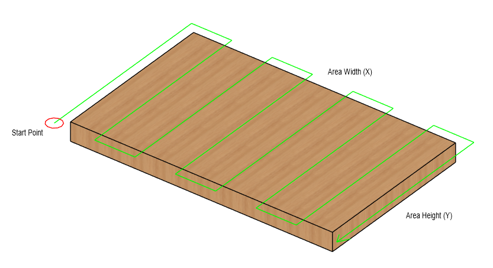
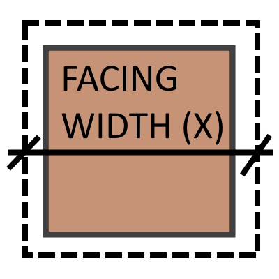
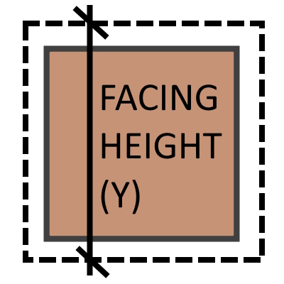
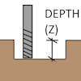
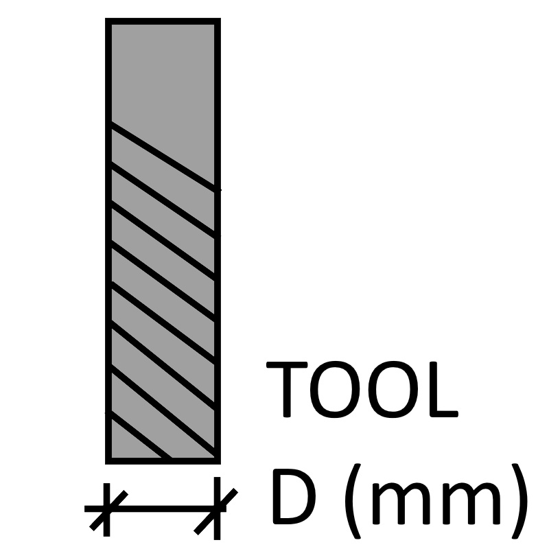
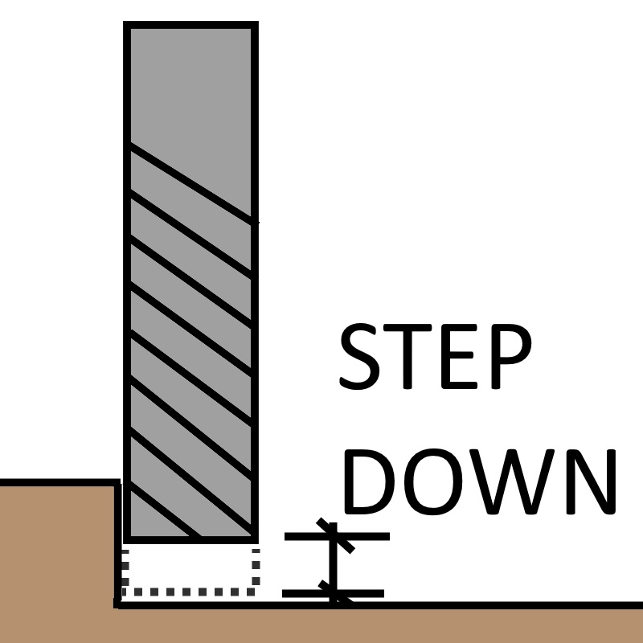
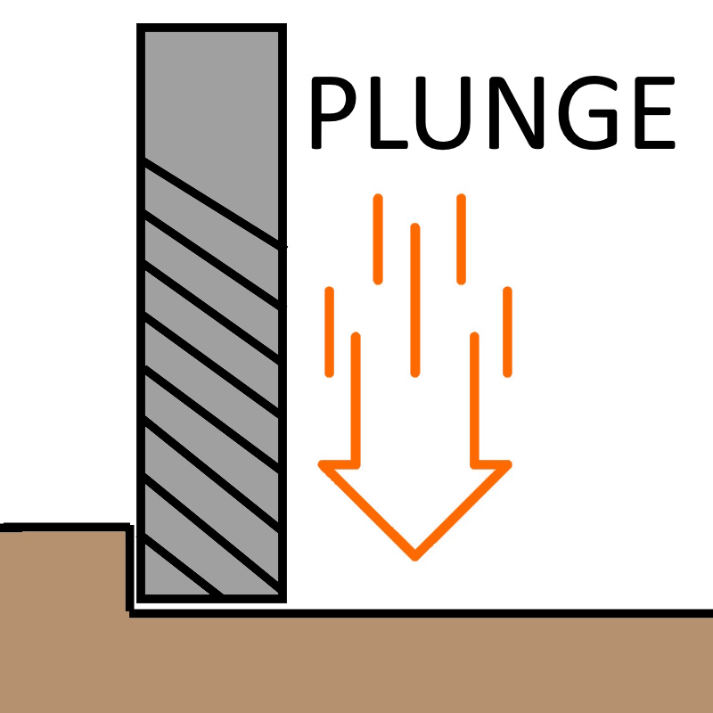
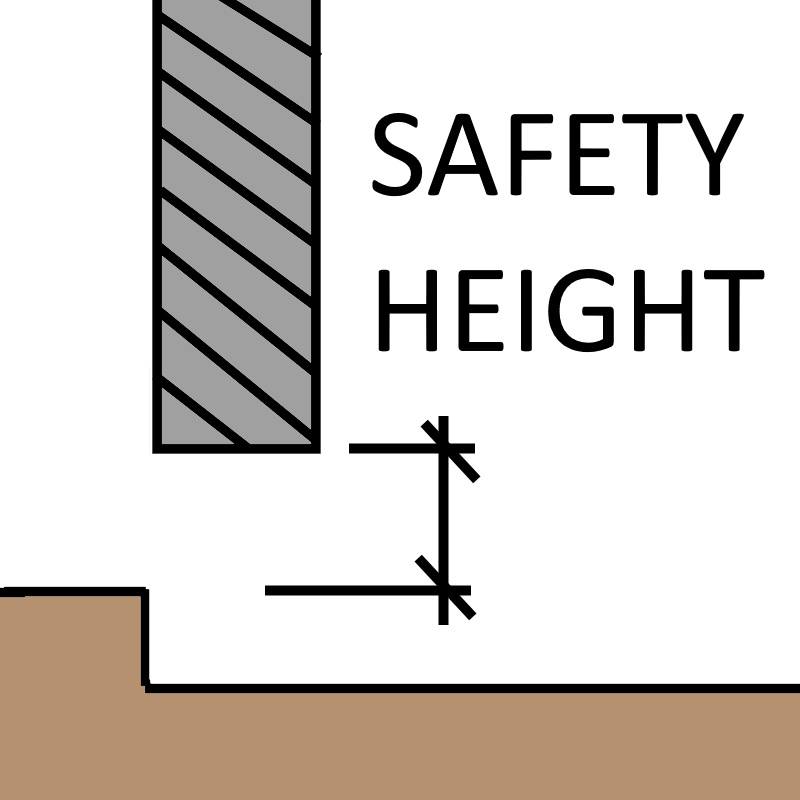

GRBL Facing G-Code Generator
Enter your parameters to generate a bi-directional (zig-zag) facing/lapping G-Code file, highly compatible with GRBL controllers.

3D Toolpath Preview
The path will appear once you press the generate button.
|
Order of operations:
|
Input Parameters
|  | Area Width (X): The total distance the tool should cover along the X-axis (horizontal) from X0. |
|  | Area Height (Y): The total distance the tool should cover along the Y-axis (vertical) from Y0. |
|  | Total Depth (Z): The final negative Z-coordinate the tool will reach (e.g., 1.0mm removal means Z will go to -1.0). |
|  | Tool Diameter: The width of the end mill or facing cutter. Essential for calculating stepover distance. |
 |
Overlap (%): The amount the tool overlaps the previous pass, ensuring a clean finish. 10% overlap means 90% stepover. |
|  | Stepdown (Z): The maximum depth of cut per layer. The job will repeat this many times until Total Depth is reached. |
 |
Feed Rate (XY): The speed at which the tool moves horizontally during the cutting passes. |
|  | Plunge Rate (Z): The speed at which the tool moves vertically down (plunges) into the material to start a new layer. |
|  | Safety Z Height: The clearance height above the material (Z0) the tool uses for safe rapid movements between cuts. |
Choose if you want to zig-zag along X or Y axis. Useful if you want to align facing with your material's grain or if your machine is stronger mechanically on one axes.